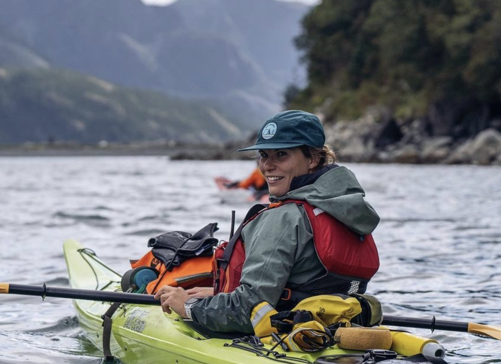

Kristen B. Gorman, PhD
Assistant Professor of Marine Biology
College of Fisheries and Ocean Sciences
Department of Marine Biology
University of Alaska Fairbanks
2150 Koyukuk Drive, 245 O’Neill Building
Fairbanks, Alaska 99775-7220
Tel: 907-474-5930
Office: Irving II 230, Lab: O’Neill 141
UAF web: https://uaf.edu/cfos/people/faculty/detail/kristen-gorman.php
Pronouns: she/her
I respectfully acknowledge Alaska’s First Peoples and their long history of
living in deep connection with their land and water, and the historical and
ongoing legacy of colonialism. As a life-long student, I am committed to
learning about injustice, and working to improve equity in my professional
and personal life.
Research Overview
Research in the Gorman Lab (established 2022) lies at the intersection of evolution, ecology, and physiology, thus we take integrative approaches to understanding factors that shape animal behavior (foraging, breeding, toxicology/disease, and movements), fitness (including associated life history traits and trade-offs), and population dynamics (demographic rates and population structure) to advance basic knowledge and inform management and conservation actions. The overarching goal of the lab is to develop molecule to ecosystem perspectives focusing on the integrative evolutionary ecology of animal systems, some of which are critically important for commercial fisheries and subsistence harvests. Together as a lab group, we incorporate modern, quantitative methods in our work, while honing our communication skills to train the next generation of conservation ecologists. The lab also aims to enhance the public’s interest in nature and understanding of the scientific process. We are always looking for new collaborators and students to join our program in Marine Biology at CFOS/UAF, please reach out to Kristen Gorman if you have interest in our work - a few recent papers are noted below. Thanks for stopping by!
Peer-Reviewed Publications, R Packages, and Theses
McMahon, J., S.A. May, P.S. Rand, K.B. Gorman, M.V. McPhee, P.A.H. Westley. In revision, Oct 2024. Assortative dispersal and differences in fitness-associated traits between hatchery and wild pink salmon (Oncorhynchus gorbuscha) in Prince William Sound, Alaska. Ecology and Evolution.
Stadler, L., K. Gorman, V. von Biela, A. Seitz, K. Iken. 2024. Does the extent of glacial cover across watersheds and discharge periods affect dietary resource use of nearshore fishes in the Northern Gulf of Alaska? Journal of Experimental Marine Biology and Ecology 577:152022.
Hasan, E.L., K.B. Gorman, H.A. Colletti, B.H. Konar. 2024. Species distribution modeling of northern sea otters (Enhydra lutris kenyoni) in a data-limited ecosystem. Ecology and Evolution 14:e11118.
Lab News - Fall 2024
We had a very busy field season during 2024. Kristen, Alex, and Maya worked several EVOS-funded cruises in Prince William Sound, Alaska between May-September. Abby spent the summer working with Alaska Department of Fish and Game as part of their Age, Sex, Length management sampling of Copper River salmon from the in-river personal use and subsistence fisheries. Kristen, Julia, and CFOS undergraduate intern with ACSPI Trish Pence spent more than a month out on St. Paul Island as part of our seabird tracking studies. Both Abby and Kristen presented at the American Fisheries Society meeting in September (Honolulu, HI). Kristen is preparing for fall PI meetings for the EVOS project and working closely with Copper River collaborators to organize a series of workshops around a modeling effort designed to understand factors affecting productivity of Copper River salmon, especially climate and harvest drivers.
Lab Group Members
Graduate Students
Julia Matteucci
Julia joined the lab in Fall 2024 as MS student in the Marine Biology program. Julia earned a BS degree in Fish, Wildlife, and Conservation Biology with a concentration in Conservation Biology from the Colorado State University in 2019. Julia has worked on a variety of wildlife field projects from praire dogs and sage grouse to Alaskan seabirds. Julia has a strong interest in ornithology and will be working on a project examining marine habitat selection by seabirds of the Pribilof Islands, Alaska in collaboration with Dr. Veronica Padula (Director, Bering Sea Research Center, Aleut Community of St. Paul Island) and Dr. Doug Causey (University of Alaska Anchorage). Julia’s work is funded by a USFWS Tribal Wildlife Grant to ACPSI (Marine habitat use by seabirds of the Pribilof Islands Marine Ecosystem (PRIME) during the non-breeding season: distribution, phenology, and environmental correlates), University of Alaska Faculty Initiative Fund awards, and a CFOS Teaching Assistantship during AY23-24.
Alex Borsky
Alex joined the lab in Spring 2024 as MS student in the Marine Biology program. Alex earned a BS degree in Marine Science with a concentration in Marine Biology and a minor in Fisheries from University of Maine in 2013. Alex is an avid hiker having completed all three of North America’s famous through hikes - the Applachian Trail, the Continental Divide Trail, and the Pacific Crest Trail. Alex is working on a retrospective spatial and temporal analysis of salmon and herring populations in Prince William Sound, Alaska aiming to quantify where and when in the life history (juvenile or adults phases) predatory or competitive interactions are taking place bewteen pink salmon and herring in PWS. Alex’s graduate commmittee includes Kristen Gorman and project collaborators Dr. Pete Rand (Prince William Sound Science Center), and Dr. Ron Heintz (Sitka Sound Science Center), and UAF CFOS faculty Dr. Katrin Iken. Alex’s thesis project is funded by the Exxon Valdez Oil Spill Trustee Council, Ecological interactions between Pacific herring and Pacific salmon in Prince William Sound, Alaska.
Abby Host
Abby joined the lab in Fall 2023 as MS student in the Marine Biology program. Abby earned a BS degree in Biology with a minor in Environmental Studies from Boston College in 2021. She is an avid outdoors woman and athlete with interests in high latitude fisheries ecology. Abby’s thesis work is focused on understanding relationships between pathogen diversity and loads and body condition of returning Sockeye Salmon to the Copper River, Alaska. Abby’s research is supported by a Teaching Assistantship during AY23-24, and a grant from the National Park Service, Examine health metrics of Copper River sockeye stocks to inform management decision making. Abby’s graduate committee includes Kristen Gorman, project collaborator Dr. Pete Rand (Prince William Sound Science Center), and Dr. Lara Horstmann (Dept Chair, UAF Marine Biology).
Undergraduate Students
Maya Russin
Maya is working on an internship with the lab during Fall 2024. Specifically, Maya’s interests are in fisheries, especially Yukon River salmon. Maya will be assisting with an EVOS funded research cruise in September 2024, and a variety of lab tasks related to stable isotope preparation of fish muscle and otolith samples.
© Copyright 2021, Kristen B. Gorman, PhD
Website last updated 2 Oct 2024